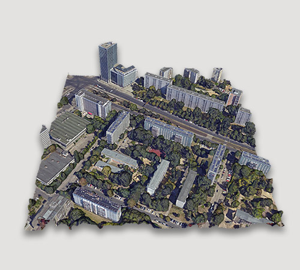

|
Dawood Wasif I am a Computer Vision Engineer at CompScience Inc. in San Francisco Bay Area through DCube Tech., where I work on their action recognition product for the mission of preventing workplace accidents. I am also serving as a Guest Scientist at AI4EO Lab at Technical University of Munich with Prof. Yuanyuan Wang and Prof. Xiaoxiang Zhu, where I research on uncertainty quantification in deep neural networks for Earth Observation. I have a Bachelor in Computer Science degree from National University of Science and Technology, Islamabad where I worked as a Research Assistant at Deep Learning Laboratory, NCAI, NUST and later as a Research Fellow at Machine Vision and Intelligent Systems Lab. Email / CV / Google Scholar / LinkedIn / Github |

|
ResearchI'm interested in computer vision, remote sensing, and uncertainty quantification. My research focuses on answering questions about why, what, and how using Explainable AI and effective Uncertainty Quantification tools. Representative papers are highlighted. |

|
Extraction of Rice Phenological Metrics Using Temporally Correlated Multispectral Drone Imagery
Dawood Wasif, Muhammad Qasim Khan, Malik Zeeshan Ahmad, Ramesha Murtaza Zuhair Zafar, Muhammad Shahzad, Karsten Berns, Muhammad Moazam Fraz SITIS, 2022 (Oral Presentation) We collected a novel multispectral dataset of rice crops to develop an automated statistical model of predicting the growth stages of various crops. |
|

|
Towards a Benchmark EO Semantic Segmentation Dataset for Uncertainty Quantification
Dawood Wasif, Yuanyuan Wang, Muhammad Shahzad, Rudolph Triebel, Xiaoxiang Zhu IGARSS, 2023 We present a synthetic dataset rendered from 3D mesh and LoD2 models of Berlin, Germany and use it to compare baseline methods for semantic segmentation and uncertainty quantification. |

|
A Large-Scale Synthetic Building Segmentation Dataset: A Benchmark for Systematic Data-Driven Uncertainty Quantification
Dawood Wasif, Yuanyuan Wang, Muhammad Shahzad, Xiaoxiang Zhu AAAI, 2024 We use the 3D dataset to simulate real-world variability to create ground truth uncertainty labels, and compare the effectiveness of multiple techniques measuring aleatoric uncertianty. |
ProjectsMy projects revolve around state-of-the-art computer vision and natural language processing technologies. Explore them listed below: |

|
Real-time Exclusion Zone Alert System
Dawood Wasif August 2023 Human detection and tracking using YOLOv8 and raising alerts and updating statistical reports on entrance into a danger zone area drawn using a polygon selector GUI. |

|
Distributed Semantic Search over Index of U.S. Patents
Dawood Wasif May 2022 A broker-based architecture for a web application on which users can enter query and find similar patents from database using TF-IDF as vector embeddings matrix and document retrieval with LSA and Cosine Similarity Search |

|
VS Code Extension for Development Workflow Automation
Dawood Wasif, Muhammad Qasim Khan, Malik Zeeshan Ahmad Jan 2022 VS Code extension that uses OpenAI Codex and other open source models to generate, autocomplete, and search for source code, and provide documentation, and git commit messages |

|
Content Based Image Retieval Search
Dawood Wasif, Muhammad Qasim Khan, Malik Zeeshan Ahmad May 2021 Reverse Image Search Tool based on metadata tags generated using hierarchical clasification and image features using customized Efficientnet as a feature extractor and Milvus as a vector search database. |
Thank you for visiting my site!
Inspired by Jon Barron